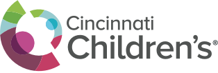

People
The lab brings together genome biologists, physiologists, computational scientists, and clinician-scientists around questions of biological time.
John Hogenesch leads the lab’s work in circadian biology, genomics, and translational systems medicine. Local source materials describe a research program spanning fundamental clock mechanisms, genome-scale analysis, public databases, computational methods, and clinical questions in circadian medicine.
The legacy lab materials consistently point to a shared structure:
The following names are recoverable from local lab documents and letters as trainees, alumni, or closely mentored investigators associated with the Hogenesch research program:
The lab’s training model emphasizes:
